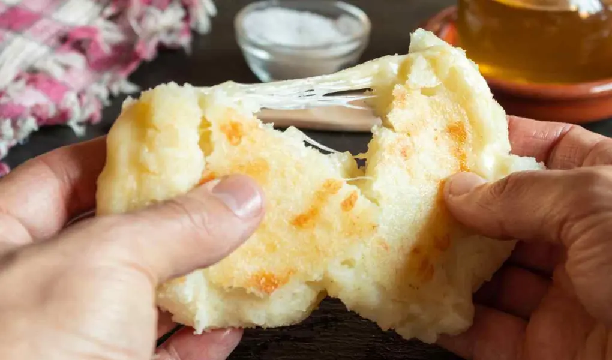

Arepa with cheese

Description
The arepa with cheese is a classic food in countries like Colombia and Venezuela. It is a very versatile food, it can be eaten with various accompaniments.
Likewise, it is very complete food on its own.
Ingredients
260 grams of precooked white corn flour or for arepas.
2 cups grated mozzarella cheese.
1 teaspoon salt.
2 tablespoons olive oil
400 milliliters of warm water
1 cup grated Manchego cheese
Preparation steps
In a large bowl, combine the flour with the salt, mozzarella cheese, olive oil and warm water; Mix until everything is well integrated, and you have a soft dough.
Take dough balls of the same size and flatten them lightly with the palm of your hand.
(Don't leave it so thick).
Heat a frying pan and coat it with a little olive oil.
Cook the arepas for three minutes per side or until cooked.
Open the arepas in half, fill them with a little Manchego cheese and
return them to the pan to melt the cheese.
Enjoy :)